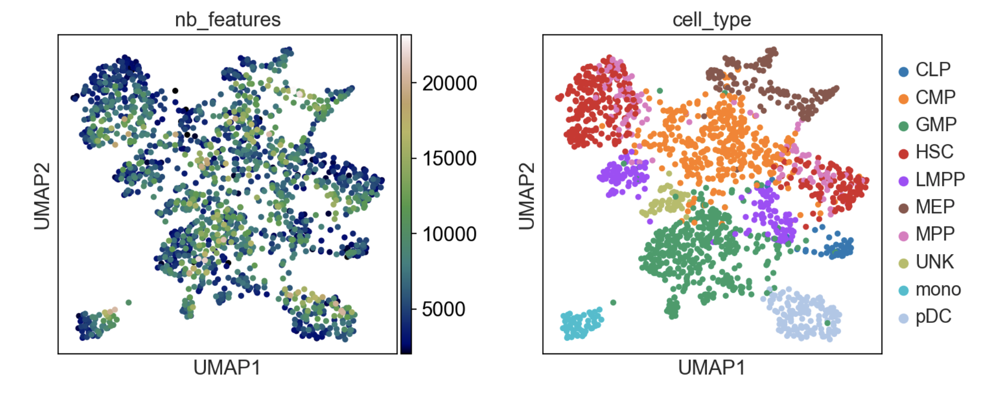
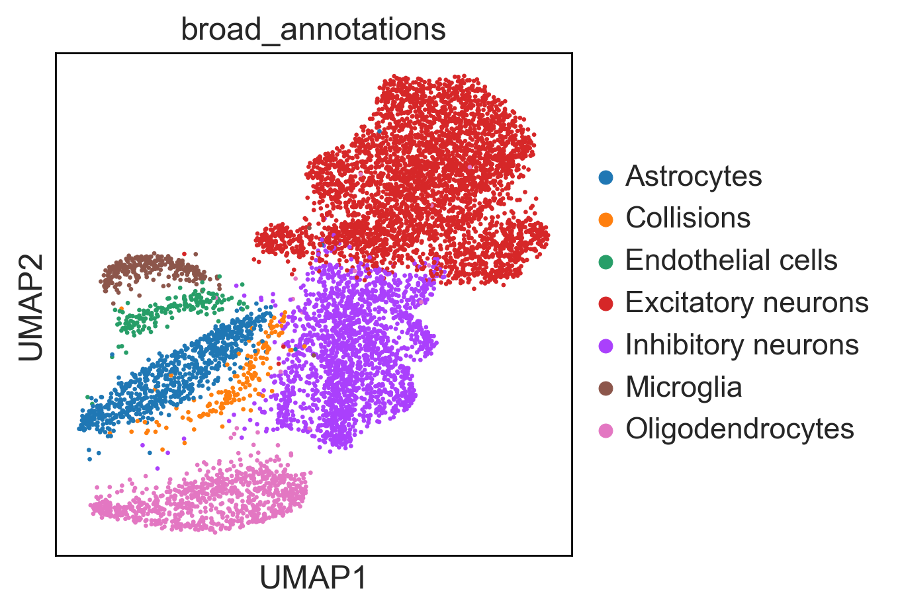
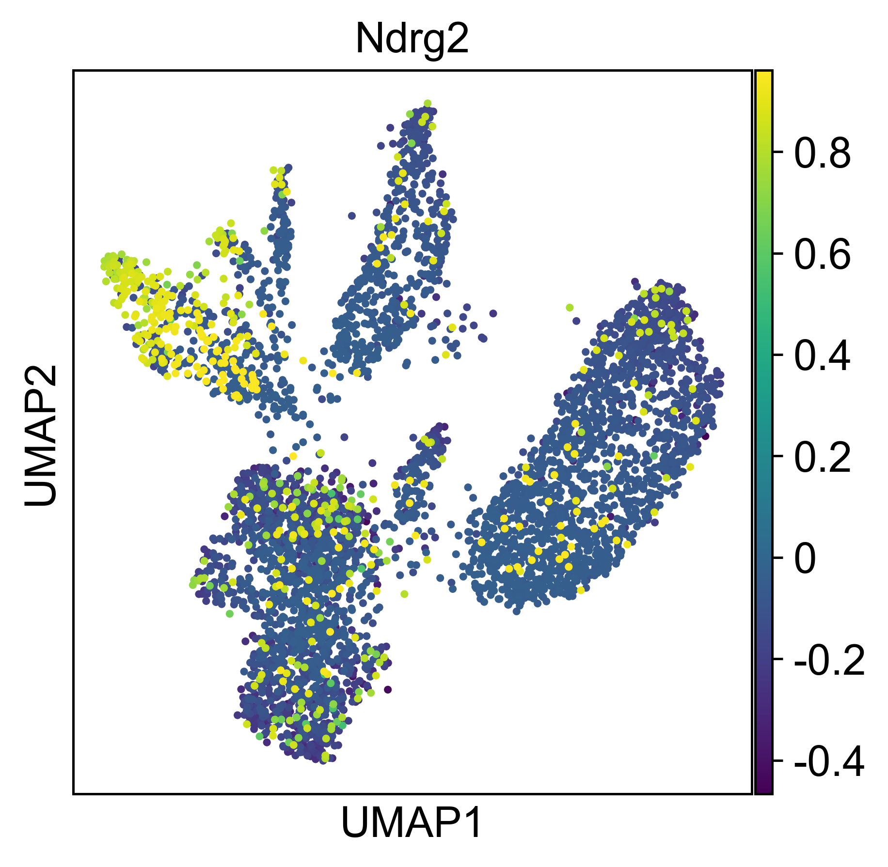
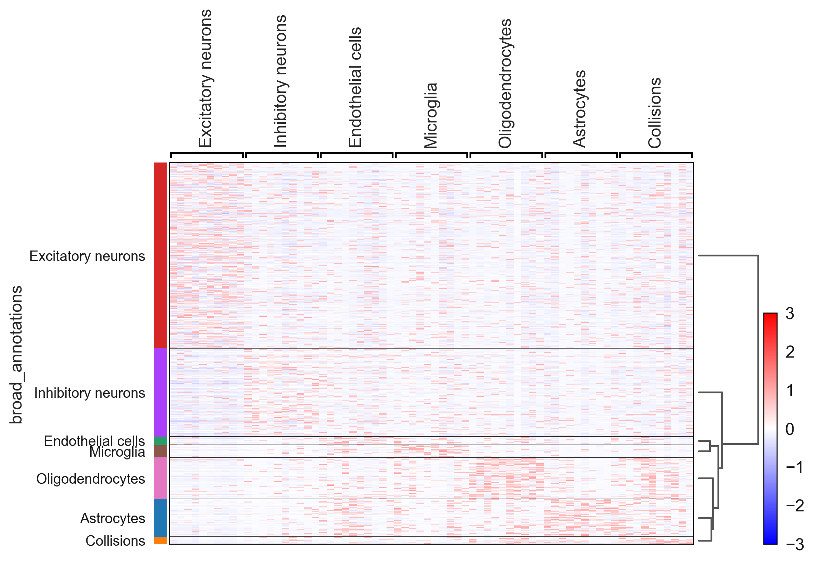
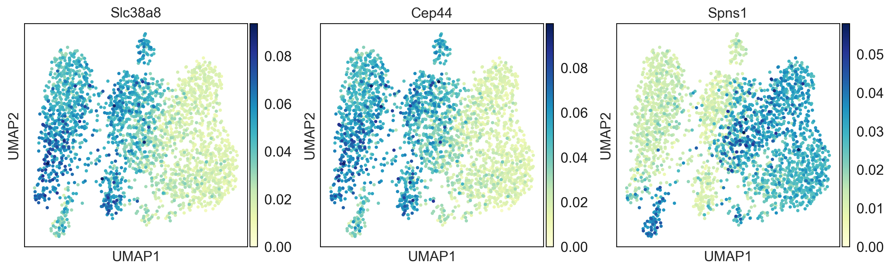
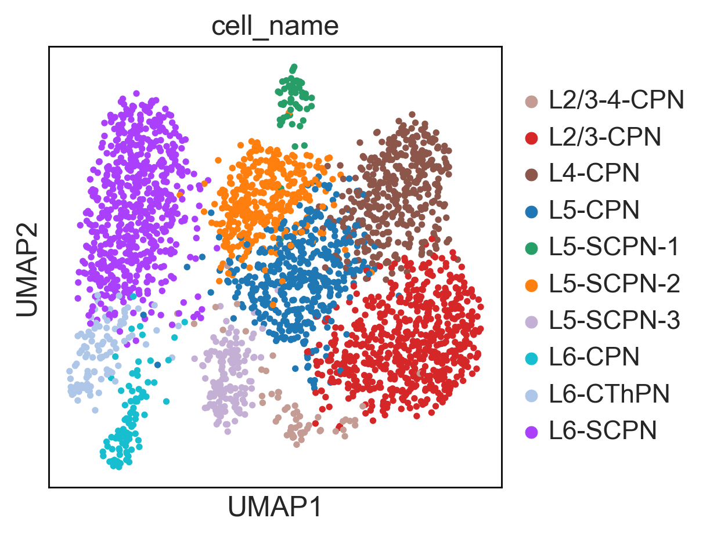
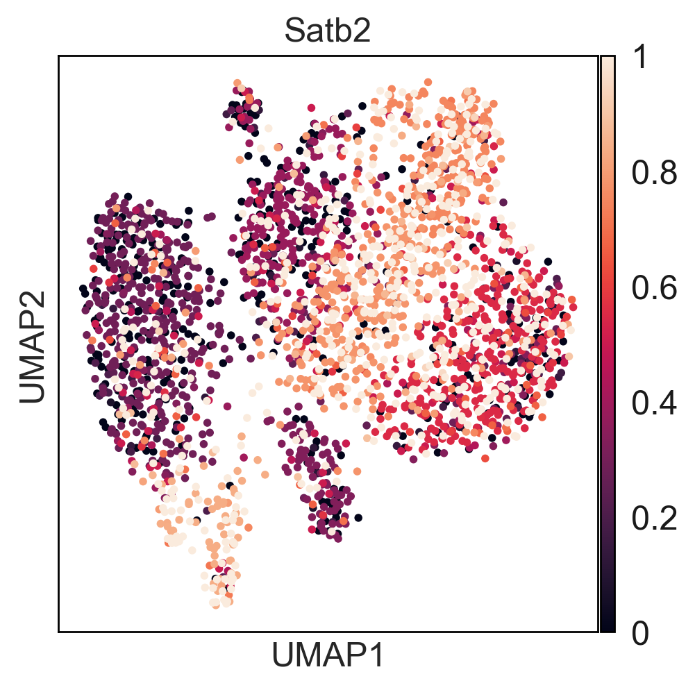
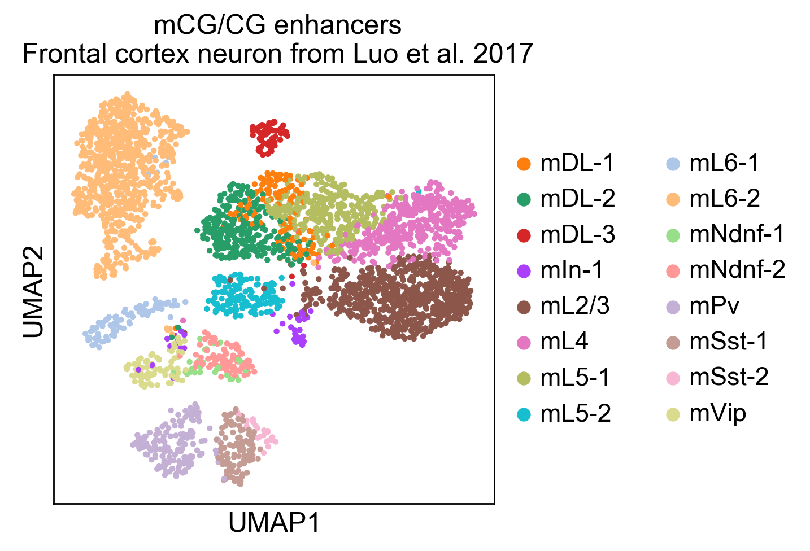

Tutorials¶
Single cell ATAC-seq¶
To get started, we recommend epiScanpy’s analysis pipeline for scATAC-seq data from Buenrostro et al. [Buenrostro18]. , the dataset consist of ~3000cells of human PBMCs. This tutorial focuses on preprocessing, clustering, identification of cell types via known marker genes and trajectory inference. The tutorial can be found here.
{kind=link}
If you want to see how to build count matrices from ATAC-seq bam files for different set of annotations (like enhancers). The tutorial can be found here.
Soon available, there will be a tutorial providing a function to very quickly build custom count matrices using standard 10x single cell ATAC output.
  {kind=link}
{kind=link}
{kind=link}
An additional tutorial on processing and clustering count matrices from the Cusanovich mouse scATAC-seq atlas [Cusanovich18].. Here.
Single cell DNA methylation¶
Here you can find a tutorial for the preprocessing, clustering and identification of cell types for single-cell DNA methylation data using the publicly available data from Luo et al. [Luo17].
The first tutorial shows how to build the count matrices for the different feature spaces (windows, promoters) in different cytosine contexts. Here is the tutorial.
To see how process single cell DNA methylation data suing epiScanpy. Here is a tutorial processing The data Luo et al. [Luo17] mouse frontal cortex dna methylation data.
   {kind=link}
{kind=link}
{kind=link}
{kind=link}